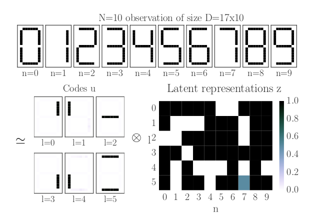
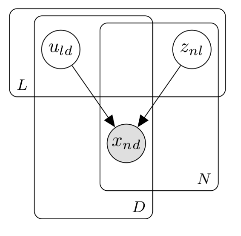
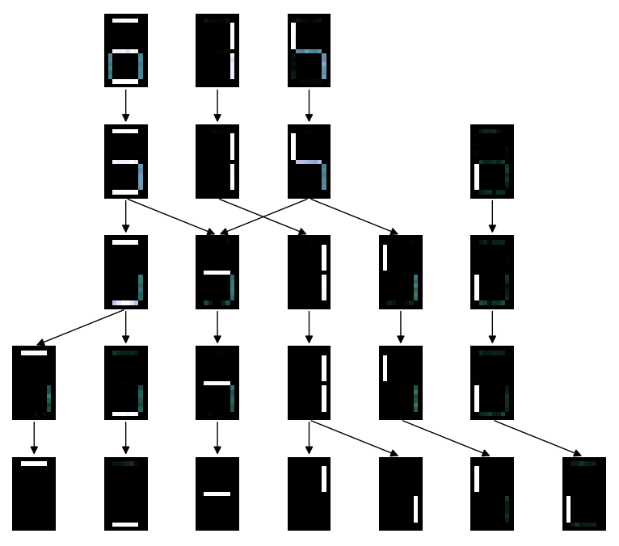
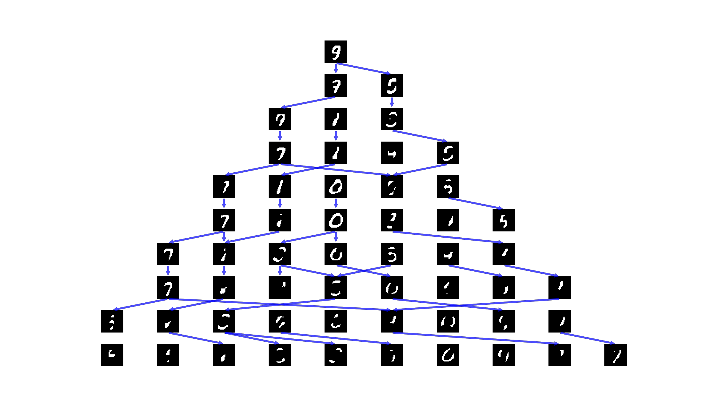
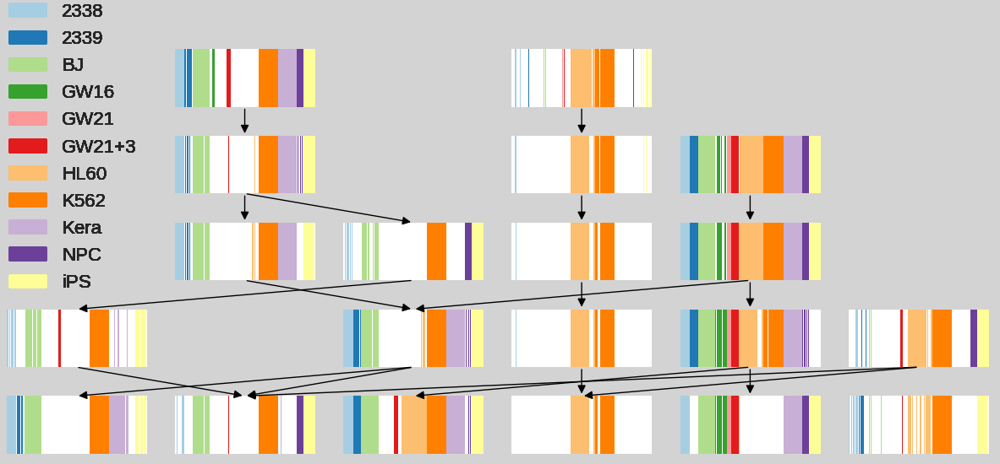
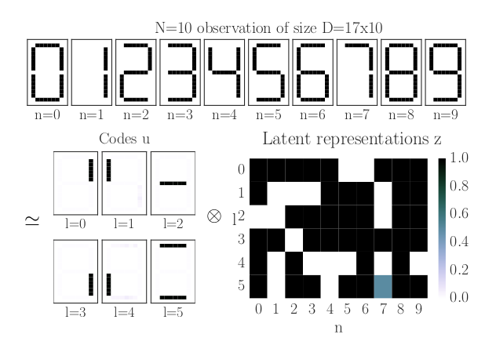
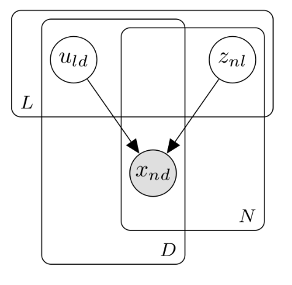
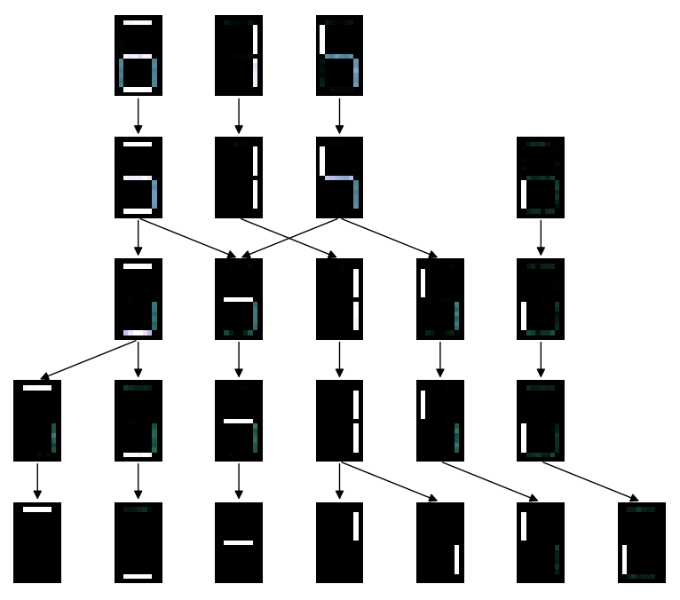
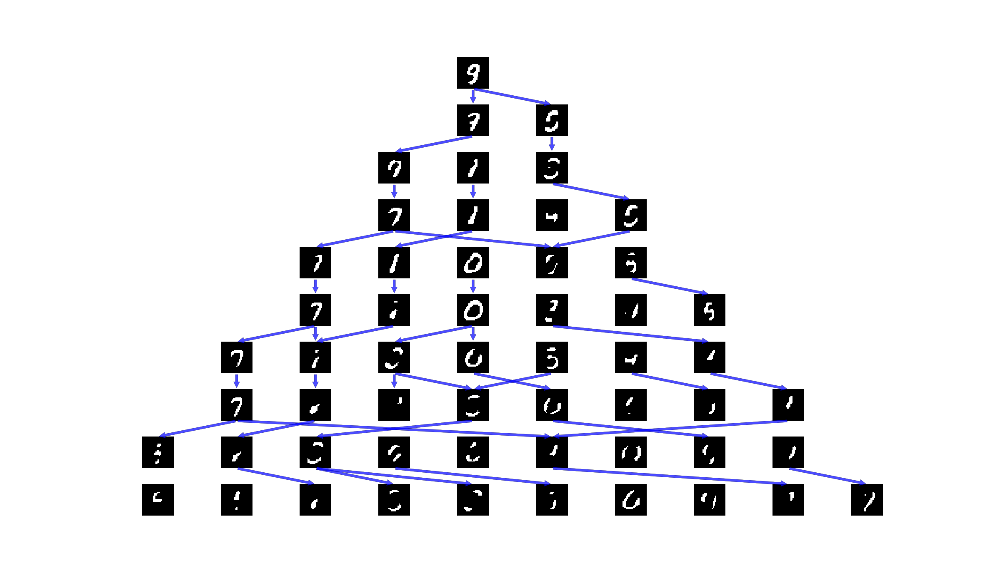
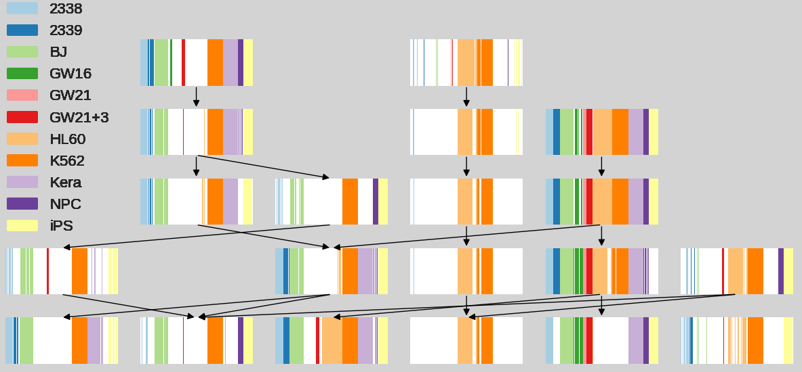

The OrMachine
5 minute intro - CH group meeting
Table of Contents
Discover patterns in binary data

Model representation
Graphical model

Neural network

Got to be deep

Examples
Calculator digits

MNIST

Single cell data





